你的第一个个人网站—-Hexo
建站概述
看到网络上各式各样的网站，你是否有想过搭建一个属于自己的个人网站？你可以在自己的网站上，分享生活，交流学习，留下点点滴滴感动。如果你是一个程序员，或者想要未来成为程序员，作为一名“有灵魂”的程序员，拥有一个个人网站，那是必不可少的。我们先来介绍一下搭建一个网站需要什么技术。
现在主流的网站都是前后端分离式开发。
| 前端 | 后端 |
|---|---|
| 页面元素、资源，接口调用（HTTP） | 具体的实现逻辑、数据库，接口传递数据 |
未来让自己的网站更加便捷
前端技术
前端基础技术包括 HTML、CSS、JavaScript 等
随着深入学习，这些技术无法满足我们的需要，于是就有了 TypeScript、React、Vue 等技术
博客框架
并不是所有人都熟悉前端开发，于是就有了博客框架，帮助我们低成本构建一个自己的博客，帮助创作者更集中精力于博客内容本身，输出更多优质文章。
博客分为静态博客和动态博客
静态博客
静态博客：仅仅有前端静态页面组成（Web 三件套：Html+Css+Js）。
-
Hexo 是一款基于 Node.js 的静态博客框架。
Jekyll：https://www.jekyll.com.cn/
Jekyll 是一个基于 Ruby 环境的静态网站生成器
-
Hugo 是由 Go 语言实现的静态网站生成器
VuePress：https://www.vuepress.cn/
Vue 驱动的静态网站生成器。
动态博客
动态博客：前后端配合开发的博客，可以进行后台管理。
Wordpress：https://wordpress.org/
使用 PHP 语言+Mysql 开发的博客平台。亦可以作为 CMS 来使用。
你可以选择自己造轮子：JavaScript + SpringBoot + Mysql。
Hexo 博客框架
我们本节课将会介绍 Hexo 博客框架建造个人网站
Hexo 博客框架有以下特点
静态博客
Hexo 可以将你的博客编译成静态的一个文件夹，直接将他部署在 web 服务器中即可直接使用，无需部署后端。可以部署在 Github Pages 等平台，部署成本低，适合零基础入门和学习。
生态强大
Hexo 是生态最强大的博客框架之一，他拥有上千款主题和拓展插件可以使用，可拓展性很强，开发方便
支持 MarkDown 语法
Hexo 支持 GitHub Flavored Markdown 的所有功能，可以创造更加丰富的内容
准备工作
安装 git
git 是个啥？
什么是 Git？
GIT，全称是分布式版本控制系统。其实对于初学者就可以把它简单理解成一个云端的代码仓库，把你写的代码上传到云端仓库。
程序猿的世界里，自由、共享是一个基本的共识。而github是世界上最大的同性交友网站代码仓库，很多项目和框架都被放在上面。而我们所使用的 Hexo 框架以及一些插件都是要从 github 上面调用的。Git 就是这个版本控制软件，对于初学者来说，git 用来安装和克隆这些项目到本地，并且将本地代码推送到云端。
关于 Github Pages：用于远程部署，使博客可以在网络上进行访问。
使用 github pages 服务搭建博客的好处有：
- 全是静态文件，访问速度快；
- 免费方便，不用花一分钱就可以搭建一个自由的个人博客，不需要服务器不需要后台；
- 可以随意绑定自己的域名，不仔细看的话根本看不出来你的网站是基于 github 的；
- 数据绝对安全，基于 github 的版本管理，想恢复到哪个历史版本都行；
- 博客内容可以轻松打包、转移、发布到其它平台；
安装
安装 Node.js
关于 Node.js
Node.js 基本介绍：
Node.js 是一个 javascript 运行环境。它让 javascript 可以开发后端程序，实现几乎其他后端语言实现的所有功能，可以与 PHP、Java、Python、.NET、Ruby 等后端语言平起平坐。是一种较为简单、轻量和高效的后端服务实现方式。
很多开源的项目后台都是在 Node.js 的运行环境下运行的，比如 Hexo 的静态博客生成系统。相当于 jave 和 jvm（java 运行环境）的关系。
有相当成熟的社区文化和众多的开发者。
在开发一个复杂的应用程序的时候，我们需要把各个功能拆分、封装到不同的文件，在需要的时候引用该文件。没人会写一个几万行代码的文件，这样在可读性、复用性和维护性上都很差，几乎所有的编程语言都有自己的模块组织方式，比如 Java 中的包、C#中的程序集等，node.js 使用模块和包来组织，其机制实现参照了 CommonJS 标准，虽未完全遵守，但差距不大，使用起来非常简单。
关于 npm
Npm（Node package management）即 node 的包管理器：
NPM 思路大概是这样的：
买个服务器作为代码仓库（registry），在里面放所有需要被共享的代码
发邮件通知 jQuery、Bootstrap、Underscore 作者使用 npm publish 把代码提交到 registry 上，分别取名 jquery、bootstrap 和 underscore（注意大小写）
社区里的其他人如果想使用这些代码，就把 jquery、bootstrap 和 underscore 写到 package.json 里，然后运行 npm install ，npm 就会帮他们下载代码
下载完的代码出现在
node_modules目录里，可以随意使用了。这些可以被使用的代码被叫做「包」（package），这就是 NPM 名字的由来：Node Package(包) Manager(管理器)。
Hexo 也是被放在 npm 仓库里的，所以我们通过 npm 进行下载安装操作。
安装
npm 换源
由于某些我们懂得都懂的原因，在国内使用 npm 官方镜像源可能无法访问或者速度慢，所以我们需要将他切换到国内的镜像源，操作很简单，在 CMD 中输入以下命令即可将 npm 的镜像源切换到国内淘宝源。
1 | npm config set registry https://registry.npm.taobao.org |
按回车后命令行没有任何输出即代表设置成功
没有任何输出就是最好的结果
备用方法
由于某些原因，npm 修改镜像源可能无法生效，或者说你不想改动你的 npm 配置。这时候提供了一个解决方案是在npm中安装cnpm，在 CMD 中输入以下命令：
1 | npm install -g cnpm --registry=https://registry.npm.taobao.org |
按回车后出现了一些进度条和文字，我们无需在意，等待安装结束即可
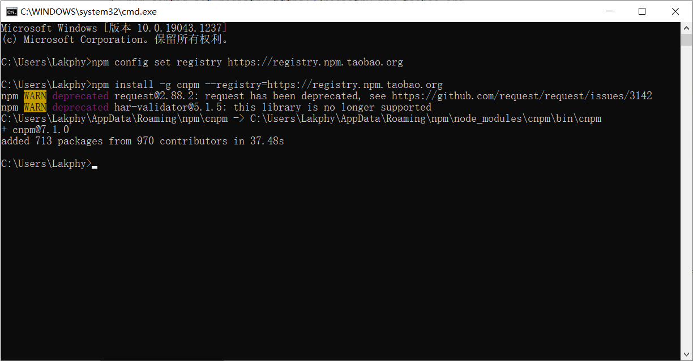
这样我们就安装了cnpm，如果你安装了cnpm，只需要将后面用到的命令中的npm改为cnmp
Visual Studio Code
简称 vscode，是微软开发的开源的代码编辑器，支持多种语言，有大量插件可以安装，功能全面，是前端开发必备的工具。
（和 vs2010、vs2019 等不是一个东西）
安装
Typora
Typora 是一款优秀的 Markdown 编辑器
Hexo 的使用
安装和使用过程建议以官方文档为准，本文仅作辅助
查阅并通过文档获取知识和技术是一个有灵魂的程序员基本技能，这项技能是通过学习过程中不断积累出来的。
很多程序员只会写代码，没有灵魂，是因为他们只会老师教的，不会自己获取知识，编程技术更新迭代很快，如果没有自己阅读文档获取知识的能力，这样的程序员很快就会被时间淘汰掉。这也是编程补课班批量生产出来的程序员和其他程序员的本质区别。
安装 Hexo
在 CMD 中运行以下命令
1 | npm install -g hexo-cli |
-g是全局安装的意思
之后就会出现进度条和一些文字，等待其完成安装。
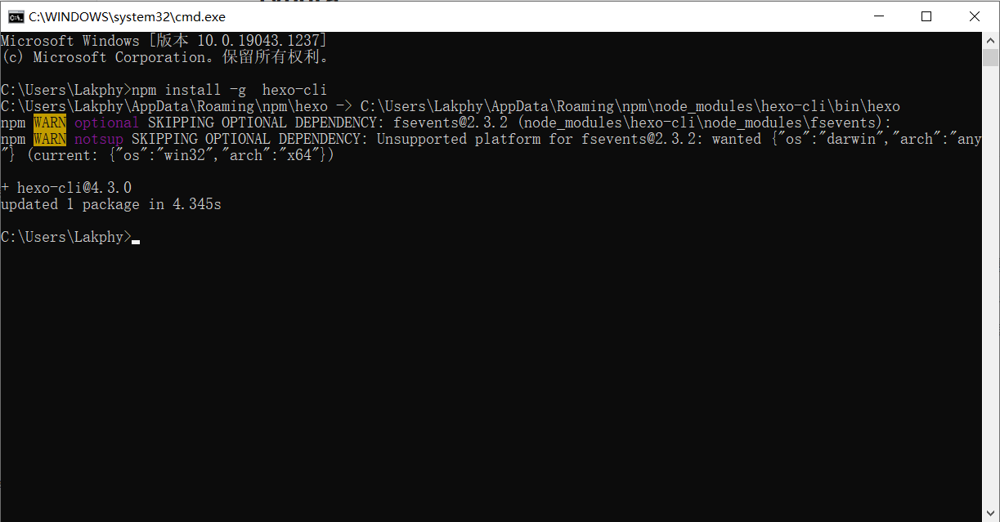
安装完成后，我们可以通过下面命令查看安装是否成功
1 | hexo -v # 查看Hexo版本 |
正确输出结果如下
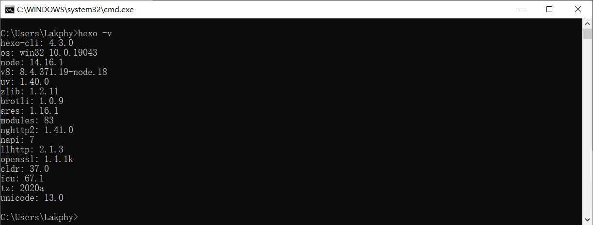
这样，Hexo 博客框架就安装好了
博客初始化
先将 CMD 的位置定位到你想要初始化博客的目录
比如，你想在 D 盘的 myblog 目录里面建立博客
首先新建文件夹
然后打开 CMD 命令窗口
输入命令切换操作目录
1 | cd /d D:\myblog |
接着使用下面命令开始初始化博客文件夹
1 | hexo init |
接着 hexo 开始构建内容
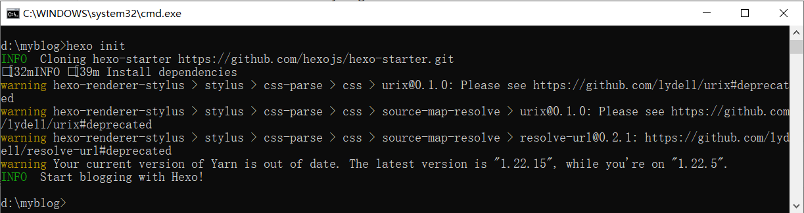
网络良好的情况下很快就可以完成初始化
安装完成后，文件夹变成如下结构
1 | . |
这个时候，Hexo 就为我们生成了一个博客，通过下面操作可以预览
1 | hexo s |
如果出现以下提示
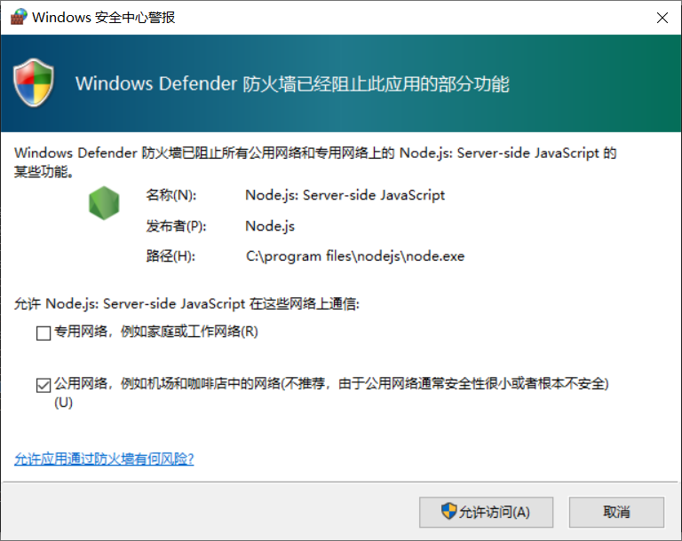
点击允许访问即可。
可以看到命令行里出现这个
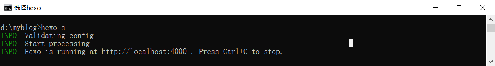
这时候我们使用浏览器访问 http://localhost:4000即可看到博客样例
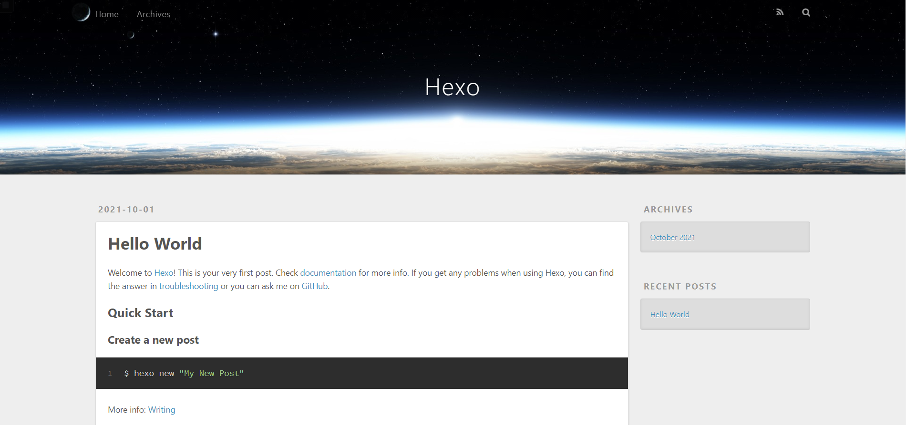
当然这并不是我们想要的样子，就像我们买到一台新手机一样，我们需要对 Hexo 进行配置
配置博客
博客目录下的_config.yml是整个博客的配置文件。
右键选择 vscode 打开便可以编辑配置文件
请不要使用 Windows 记事本编辑此文件！！！！！
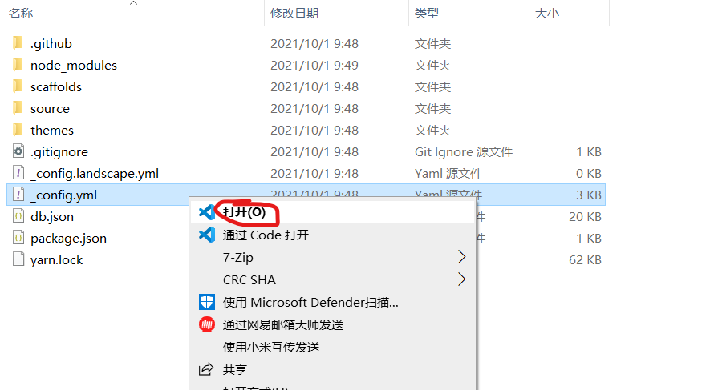
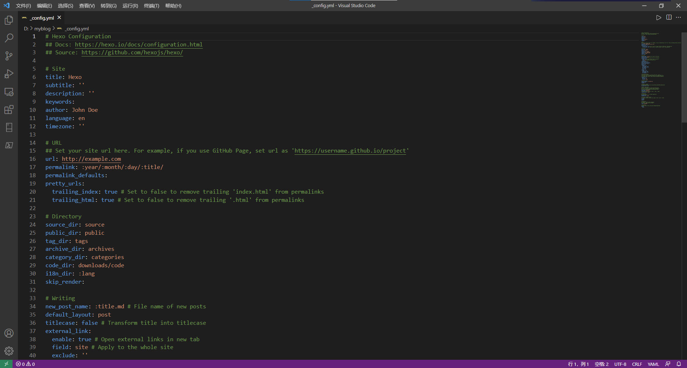
下面开始配置 hexo，这里只讲述初次使用者必需的部分，更多进阶操作请访问hexo 官方网站。
# Site：
| 属性名称 | 描述 | 常用属性值 |
|---|---|---|
title |
博客/网站的标题 | 你自己的 Blog 标题 |
subtitle |
博客/网站副标题 | - |
description |
网站、博客的描述 | - |
keywords |
关键字 | 网站的关键词，使用半角逗号分隔开多个关键词，关键词对 SEO 的优化有一定的作用 |
author |
作者 | |
language |
语言 | 默认 en；建议改成zh-CN（中文） |
timezone |
网站时区 | Hexo 默认使用您电脑的时区。也可换成America/New_York, UTC 。一般的，对于中国大陆地区可以使用 Asia/Shanghai。 |
其中，
title：网站的名字，会写在hexo generator命令生成后的 public 文件夹下的 index.html 文件的 title 标签里
description主要用于 SEO(即：搜索引擎优化)，告诉搜索引擎一个关于您站点的简单描述，通常建议在其中包含您网站的关键词。author参数用于主题显示文章的作者。
# URL：
| 属性名称 | 描述 | 常用属性值 |
|---|---|---|
url |
网址 | - |
root |
网站根目录 | - |
permalink |
文章的 永久链接 格式 | :year/:month/:day/:title/ |
permalink_defaults |
永久链接中各部分的默认值 | |
pretty_urls |
改写 permalink 的值来美化 URL |
|
pretty_urls.trailing_index |
是否在永久链接中保留尾部的 index.html，设置为 false 时去除 |
true |
pretty_urls.trailing_html |
是否在永久链接中保留尾部的 .html, 设置为 false 时去除 (对尾部的 index.html无效) |
true |
网站存放在子目录
如果您的网站存放在子目录中，例如
http://yoursite.com/blog，则请将您的url设为http://yoursite.com/blog并把root设为/blog/。
例如：
1 | # 比如，一个页面的永久链接是 http://example.com/foo/bar/index.html |
可以注意到，
permalink是文章的永久链接格式，可以在 permalink 这里配置，如默认中的配置，在 hello world 文章中就会是这样的 url：http://localhost:4000/2020/09/26/hello-world/同时，在使用 hexo g 生成的 public 文件夹里面，文件夹的层级也会按这个配置:
[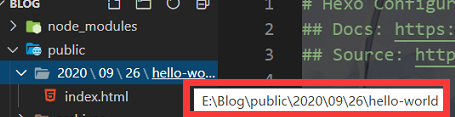]
# Directory：
| 属性名称 | 描述 | 常用属性值 |
|---|---|---|
source_dir |
资源文件夹，存放 hexo 文章的文件夹，我们写的 md 文件都放在这个配置对应的文件夹下。 | source |
public_dir |
公共文件夹，这个文件夹用于存放hexo g生成的站点文件。 |
public |
tag_dir |
标签文件夹，按标签存放文章的目录，在给文章添加tags标签后会有 |
tags |
archive_dir |
归档文件夹 | archives |
category_dir |
分类文件夹，按分类存放文章的目录，在给文章添加category标签后会有 |
categories |
code_dir |
Include code 文件夹 | downloads/code |
i18n_dir |
国际化（i18n）文件夹 | :lang |
skip_render |
跳过指定文件的渲染，您可使用 glob 表达式来匹配路径。 |
提示:
如果您刚刚开始接触 Hexo，通常没有必要修改这一部分的值。
没到自己制作 theme 的水平别修改！
# Writing：
| 属性名称 | 描述 | 常用属性值 |
|---|---|---|
new_post_name |
新文章的文件名称 | :title.md |
default_layout |
预设布局 | post |
auto_spacing |
在中文和英文之间加入空格 | false |
titlecase |
把标题转换为 title case | false |
external_link |
在新标签中打开链接 | true |
external_link.enable |
在新标签中打开链接 | true |
external_link.field |
对整个网站（site）生效或仅对文章（post）生效 |
site |
external_link.exclude |
需要排除的域名。主域名和子域名如 www 需分别配置 |
[] |
filename_case |
把文件名称转换为 (1) 小写或 (2) 大写 | 0 |
render_drafts |
显示草稿 | false |
post_asset_folder |
启动 Asset 文件夹 | false |
relative_link |
把链接改为与根目录的相对位址 | false |
future |
显示未来的文章 | true |
highlight |
代码块的设置, see Highlight.js section for usage guide | |
prismjs |
代码块的设置, see PrismJS section for usage guide |
相对地址
默认情况下，Hexo 生成的超链接都是绝对地址。例如，如果您的网站域名为
example.com,您有一篇文章名为hello，那么绝对链接可能像这样：http://example.com/hello.html，它是绝对于域名的。相对链接像这样：/hello.html，也就是说，无论用什么域名访问该站点，都没有关系，这在进行反向代理时可能用到。通常情况下，建议使用绝对地址。
new_post_name：新文章的默认名称，我们是使用 hexo new 来构造文章的，生成的文章名就是通过这里配置的，默认为:
title.md，也就是标题.md
default_layout：预设布局，
hexo new可以创建三种文件，post/帖子，draft/草稿，page/页面，这里设置默认值在使用hexo new就可以直接创建对应默认类型的文章，设置了 post 就等同于说在命令行执行hexo new <name>和执行hexo new post <name>是一样的，也可以设置为 draft 和 page
post_asset_folder：是否启动资源文件夹，对于我们的网站，如果我们的文章里面有图片，我们可以在 source 文件夹下建立一个统一的 images 文件夹来存放图片，但是如果有的文章有很多的资源文件如图片，我们可以通过设置该配置为 true，这样在 source 文件夹下创建文件的同时也会创建一个同名文件夹来存放相应的资源，比如我设置为 true，然后执行 hexo new newPost
highlight：代码块的设置
enable：开启代码高亮，默认为 trueauto_detect：如果未指定语言，就自动检测，默认为 falseline_number：显示代码的行数，默认为 truetab_replace：用 n 个空格来代表 tab 键，如果值为空，则不会代替 tab 键wrap：是否将代码放在 table 标签里，默认为 truehljs：是否对 CSS 类使用 hljs-*前缀，默认为 false
# Home page setting：
1 | # Home page setting |
index_generator：主页相关的设置
path：主页对应的路径，默认为’’，即域名根目录就是主页的路径
order_by：帖子的排序，默认为-date，即按日期倒序排
# Category & Tag
1 | # Category & Tag |
是否在页面开头插入 meta 标签，默认为 true
# Metadata elements
1 | # Metadata elements |
# Date / Time format
1 | # Date / Time format |
date_format：日期格式，默认为 YYYY-MM-DD，即年月日
time_format：时间格式，默认为 HH:mm:ss，即时分秒
use_date_for_updated：启用以后，如果 Front Matter 中没有指定 updated（文件更新日期），post.updated 将会使用 date 的值而不是文件的创建时间，默认值为 true
# Pagination
1 | per_page: 10 |
per_page：分页时每页的文章数，如果为 0 则不分页，默认为 10
pagination_dir: 分页的目录，默认为 page，对应于 public 文件夹下的 archives 文件夹下的 page 文件夹，如果只有一页是不会生成这个文件夹的
# Include / Exclude file(s)
1 | # include:/exclude: options only apply to the 'source/' folder |
include：Hexo 默认会忽略隐藏文件和文件夹（包括名称以下划线和 . 开头的文件和文件夹，Hexo 的 _posts 和 _data 等目录除外）。通过设置此字段将使 Hexo 处理他们并将它们复制到 source 目录下。
exclude：Hexo 会忽略这些文件和目录
ignore：忽略的文件
要注意的是，这里要写入的是数组，而 yaml 的数组要用-值表示数组中一个元素或者直接采用 js 中数组的写法[]
# Extensions
1 | theme: landscape |
theme当前主题名称。值为
false时禁用主题。
1 | deploy: |
deploy部署部分的设置
这里给出一个最后远端部署 github 的配置例子：
1 | deploy: |
开始创作
使用下面命令新建文章
1 | hexo new <title> |
例如
1 | hexo new "你的第一个个人网站" |
注意使用英文引号
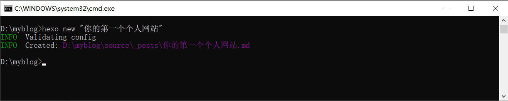
注意：新建一篇文章。完整的命令其实是：
$ hexo new [layout] <title>，其中layout可以忽略不写。如果没有设置
layout的话，默认使用_config.yml中的default_layout参数代替（默认是 post）。如果标题包含空格的话，请使用引号括起来。
关于文章模板
在新建文章中使用的
post参数，就是模板的名称，在使用hexo new post <title>命令进行新建文章时，系统会自动在scaffolds文件夹中搜寻名为post的文件，根据其中的内容生成新的.md文章文件。后续随着配置项的增多，可以自行设置不同类型的模板。
之后你就可以在/source/_posts文件夹中看到你新建的博客 Markdown 文件，比如 你的第一个个人网站.md
使用 Typora 软件打开你新建的博客。
可以看到如下内容
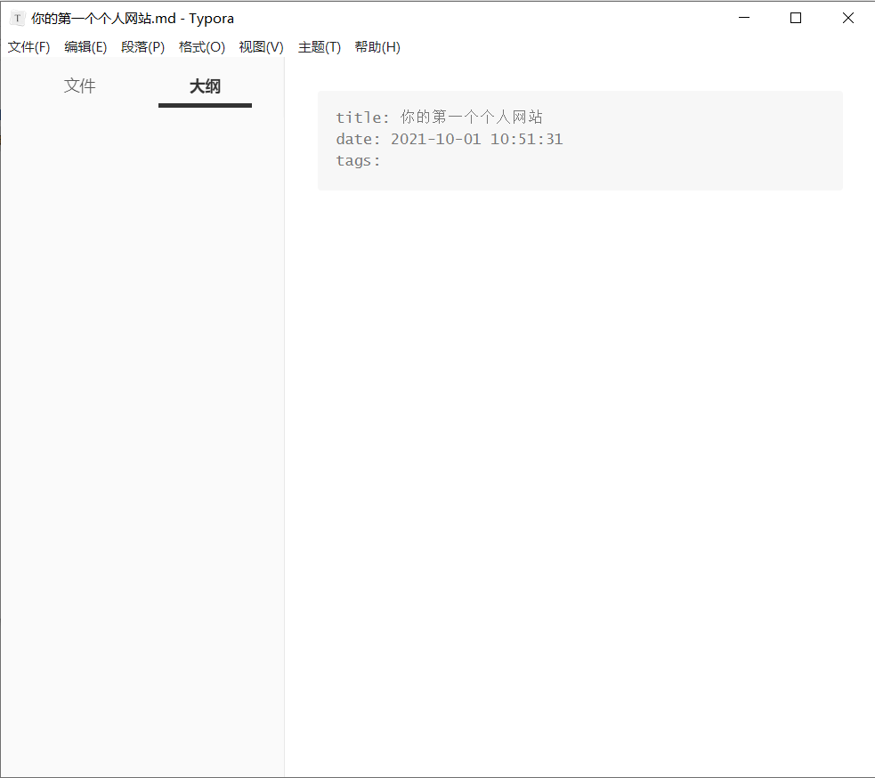
如图所示框内内容为文章配置信息
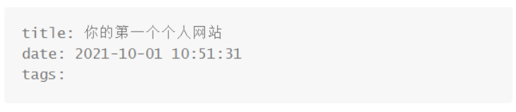
其中title是标题，date是时间，tags是标签
其中 tags 可以设置多个
1 | tags: |
上面是一些基本配置，根据你的博客主题不同，博客主题可能会需要更多其他配置参数，来丰富其功能
之后你便可以创作啦
创作之后可以通过后续讲解的操作来预览和发布
预览和发布
本地预览
使用下面的命令可以本地预览博客
1 | hexo s |
如果出现以下提示
点击允许访问即可。
可以看到命令行里出现这个
这时候我们使用浏览器访问 http://localhost:4000即可看到博客样例
生成静态文件
使用命令
1 | hexo g |
可以在/public文件夹生成静态文件，我们可以将这个静态文件放到我们的 web 服务器或 pages 中，就可以远程访问了。
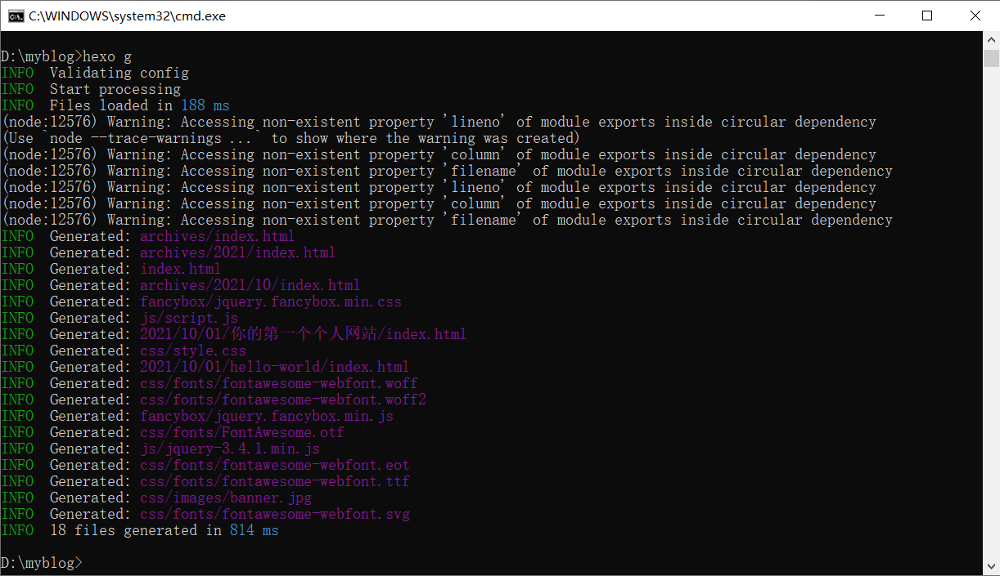
发布
生成静态文件后，我们选择 GitHub Pages 展示博客，后面内容将会介绍
主题和个性化
hexo 初始化后默认的主题样式可以在_config.yml中的 theme 中看到，是landscape。
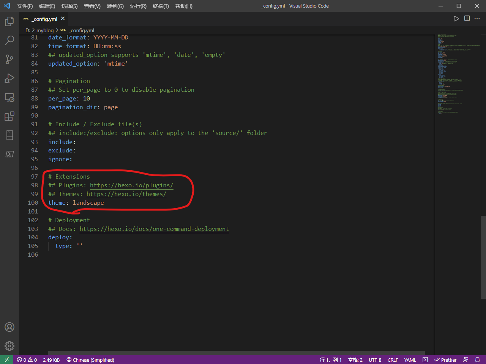
你可以在 github 上搜索其他的主题，克隆下来，并进行配置。
关于主题我们可以在 hexo 官网上搜索，但更建议直接在 github 上搜索 hexo-theme，选择 most-stars 筛选出最受欢迎的，在一次浏览各个 Demp 去找到你最喜欢的一个主题样式。
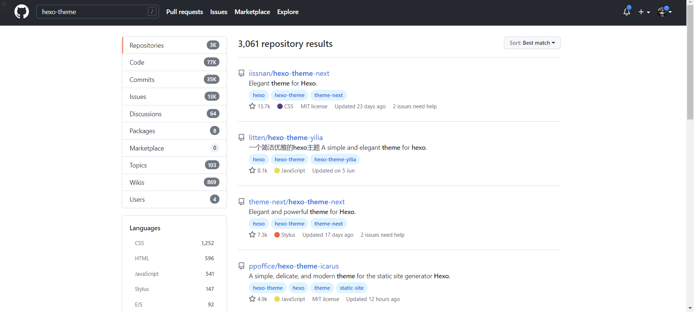
这里选择一个我比较喜欢的样式作为例子。
github 搜索** hexo-theme-butterfly**
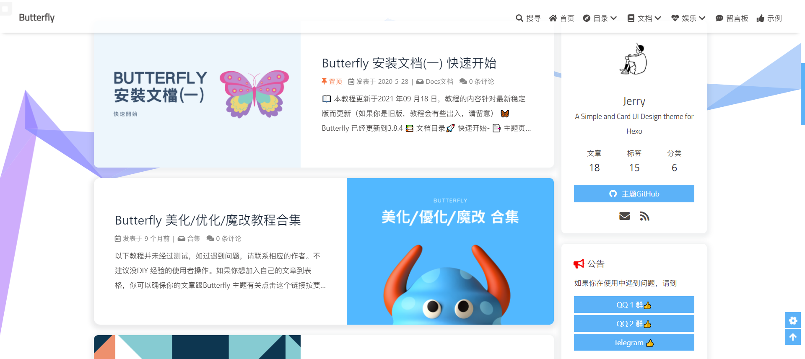
新手其实推荐使用 Next 主题，因为这是最受欢迎的，所以他的参考资料最多。
我选择 Butterfly，首先这是一款由中国人开发的主题，对于中文的兼容性比较好。其次他的样式我比较喜欢。另外他的更新频率很高。
更换主题的命令如下：
在博客的根目录下，
1 | git clone -b master https://github.com/jerryc127/hexo-theme-butterfly.git themes/butterfly |
其他的主题克隆命令类同，可以自行阅读文档。
应用主题：
修改站点配置文件_config.yml，把主题改为butterfly
1 | theme: butterfly |
安装插件：
如果你没有 pug 以及 stylus 的渲染器，请下载安装：
1 | npm install hexo-renderer-pug hexo-renderer-stylus --save |
升级建议：
因为主题经常会更新，为了防止每次更新替换掉原来配置好的_config.yml,可以通过以下方式避免被替换掉。
如果已经在
source/_data/创建了butterfly.yml，请记得删除掉。
首先， 把主题文件夹中的 _config.yml 复制到 Hexo 根目录里，同时重新命名为 _config.butterfly.yml。
以后只需要在 _config.butterfly.yml进行配置就行。
因为 Hexo 会自动合并主题中的_config.yml和 _config.butterfly.yml里的配置，如果存在同名配置，会使用_config.butterfly.yml的配置，其优先度较高，这样就能防止更新主题的时候，主题目录下的配置被更新，丢失之前的配置。
Github Pages
首先在 blog 目录下使用终端安装一个插件：
1 | npm install --save hexo-deployer-git |
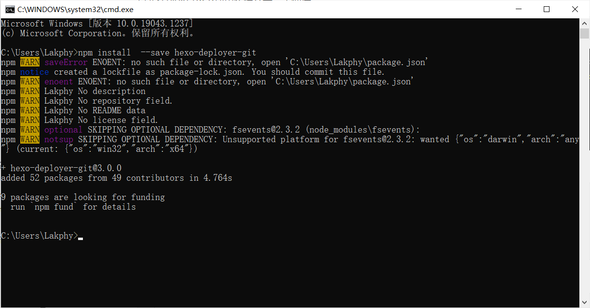
然后配置根目录下的_config.yml：
1 | deploy: |
接着，在终端输入：
1 | hexo d |
根据提示输入你的 github 账号密码或者 ssh 私钥对应的密码，即可上传到云端。
注意：在要求输入密码时，你输入之后密码是不显示的，这是为了安全，并非是你没输上。
最后，刷新你的仓库，可以看到你博客的 public\文件夹下内容已经上传成功，进入 settings 查看 github pages，可以看到已经绑定好了外域名，点开该域名即可访问。
FAQ
如何在博客中插入图片
使用 hexo 资源文件夹
第一步：安装插件，在 hexo 根目录打开终端,执行
1
npm install hexo-asset-image --save
第二步：打开 hexo 的配置文件
_config.yml
找到 post_asset_folder，把这个选项从false改成true
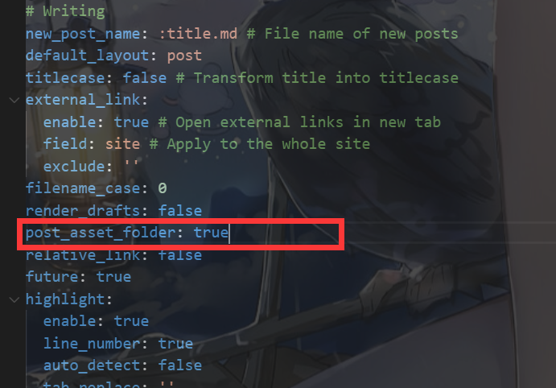XXXX.md
博文时就会在/source/_posts目录下生成XXXXXX的文件夹，将你想在XXXXX`博文中插入的图片放置到这个同名文件夹中即可，图片的命名随意。第四步：添加图片：在想添加的位置写入
,例如。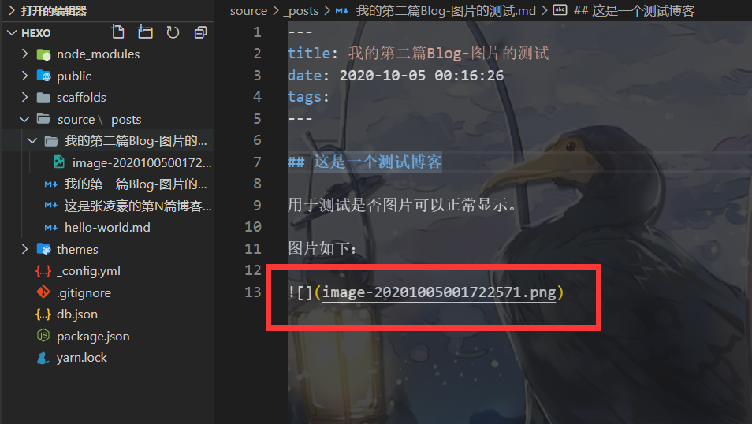
使用图床
不做详细介绍
更多？
欢迎补充
内容参考
部分内容来自